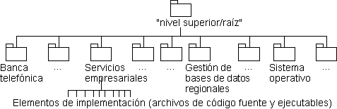

| Directriz: Modelo de implementación |
 |
|
| Elementos relacionados |
|---|
ExplicaciónEn el entorno de programación, una implementación está compuesta por elementos de implementación, que incluyen archivos de código fuente, archivos binarios, y archivos de datos, organizados en directorios. Además de estos elementos de nivel bajo, a menudo aparece la necesidad de crear unidades de nivel más elevado de gestión, los subsistemas de implementación, que agrupan elementos de implementación y otros subsistemas de implementación. El modelo de implementación modela, principalmente, los subsistemas de implementación, que incluyen dependencias y otra información de gestión. También puede modelar elementos clave de un subsistema de implementación, como archivos desplegables, o estructuras de directorio.
La notación en el modelo de implementación. Las flechas muestran posibles propiedades. Existe, opcionalmente, un paquete que sirve como nodo de nivel más alto (raíz) en el modelo de implementación. Los paquetes, estereotipados como <<subsistemas de implementación>> agrupan los elementos de implementación (archivos y directorios) y otros subsistemas de implementación. Ejemplo:En un sistema bancario, los subsistemas de implementación se organizan como estructuras planas en el nodo de nivel más alto del modelo de implementación. Otro modo de visualizar los subsistemas en el modelo de implementación es en capas. (Consulte el apartado Directriz de producto de trabajo: Dependencia de importación).  El modelo de implementación para un sistema bancario, que muestra la jerarquía de propiedad. El modelo de implementación no sólo define la estructura básica de la implementación en términos de jerarquía de subsistemas de implementación, sino que también puede mostrar las dependencias a importar entre los subsistemas de implementación, las dependencias de compilación entre los elementos de implementación, y los diagramas que muestran dependencias entre elementos del modelo de implementación y los elementos del modelo de diseño. Para obtener más información, consulte:
UtilizaciónEl modelo de implementación se centra en la preocupación de la organización física del software en términos de subsistemas de implementación y elementos de implementación. De forma opcional, puede crear un único modelo que solucione la implementación física y el diseño lógico en un único modelo. Esto es común en un enfoque de ingeniería directa e inversa que sincroniza los archivos de código fuente con un modelo de implementación/diseño combinado. La organización de los subsistemas de implementación puede ser más o menos próxima al modelo de diseño, dependiendo de cómo decida correlacionar entre estos dos modelos. Esta es una decisión de proceso que debe capturarse en las directrices de diseño específicas al proyecto. Cuando la correlación es exacta, es decir, cada subsistema de implementación también es un subsistema de diseño, puede crear diagramas que se centran en un único subsistema de diseño, resumiendo el diseño y su implementación. Para obtener más información, sobre cómo estructurar el modelo de implementación, y correlacionar entre los modelos de diseño e implementación, consulte los apartados Técnica: Diseño de correlación para código, Tarea: Estructurar el modelo de implementación y Directriz: Elemento de implementación. |
© Copyright IBM Corp. 1987, 2006. Reservados todos los derechos. |